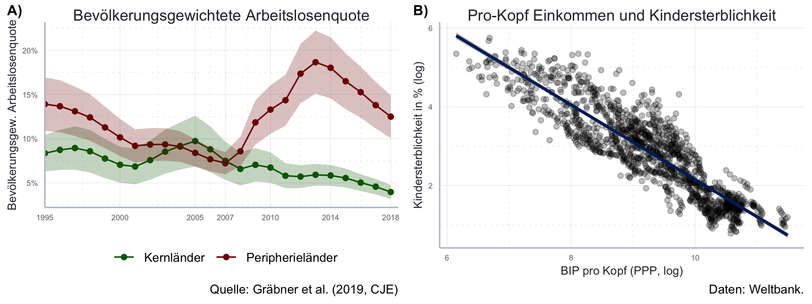
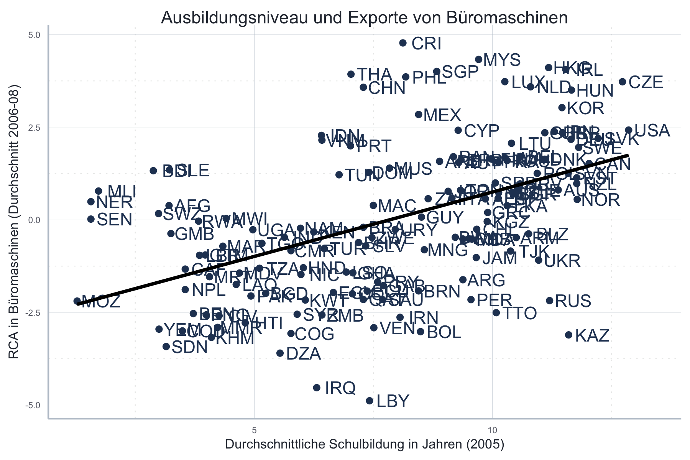

Chapter 5 Visualisierung von Daten
Verwendete Pakete
library(here)
library(tidyverse)
library(data.table)
library(ggpubr)
library(ggrepel)
library(scales)
library(tufte)
library(gapminder)
library(viridis)
library(latex2exp)
library(WDI)
library(countrycode)Einleitung
In diesem Kapitel lernen Sie mit Hilfe des Pakets ggplot2 Ihre Daten
ansprechend zu visualisieren.
Der erste Abschnitt ist dabei optional und beschäftigt sich mit den theoretischen
Grundlagen von ggplot2.
Hier diskutieren wir die Abgrenzung zwischen dem ggplot2- und base-Ansatz
zur Datenvisualisierung in R und führen mit der in Wickham (2010) entwickelten
Grammatik für Grafiken das theoretische Fundament für ggplot2 ein.
Diese beiden Abschnitte sind recht abstrakt, aber helfen Ihnen die interne Logik
von ggplot2 besser zu verstehen.
Im zweiten Abschnitt werden die grundlegenden Elemente einer Grafik
in ggplot2 beschrieben und eine erste Beispielgrafik Stück für Stück erstellt.
Der dritte Abschnitt erläutert anhand von Beispielen wie die
gängigsten Visualisierungsarten in ggplot2 erstellt werden
können.
Danach werden ausgewählte fortgeschrittene Techniken, wie z.B. die Visualisierung von Regressionsergebnissen oder das Erstellen von Plots mit mehreren Abbildungen, eingeführt. Dabei greifen wir an einigen optionalen Stellen natürlich auf das Kapitel zur linearen Regression vor (siehe Kapitel 10), allerdings sollten die Inhalte hier auch ohne tieferen Kenntnisse der Regressionsanalyse verständlich sein.
Im fünften Abschnitt zeigen wir aufbauend auf Schwabish (2014) wie typische Fehler in der Datenvisualisierung vermieden werden können. Der sechste Abschnitt illustriert ausgewählte Manipulationsstrategien bei der Datenvisualisierung. Im letzten Abschnitt finden Sie Empfehlungen für weiterführende Literatur.
5.1 Optional: Theoretische Grundlagen
5.1.1 ggplot2 vs. base plot
Wie so oft bietet R verschiedene Ansätze zur Datenvisualisierung.
Die beiden prominentesten sind dabei die in der Basisversion von R integrierten
Visualisierungsfunktionen, häufig als base bezeichnet, und das Paket
ggplot2
(Wickham 2016).
Die Frage ‘Welcher Ansatz ist nun besser?’ ist nicht leicht zu beantworten,
insbesondere da beiden Ansätzen eine sehr unterschiedliche Design-Philosophie
zugrunde liegt:
base funktioniert dabei wie ein Stift und ein Blatt Papier:
Sie haben ein leeres Blatt, welches Sie mit dem Aufruf bestimmter plot-Funktionen
beschreiben.
Hierbei wird kein besonderes R-Objekt erstellt, in dem die Grafik gespeichert
wird - vielmehr speichern Sie am Ende ihr ‘vollgemaltes Blatt’ entweder als Bild
ab, oder Sie verwerfen es und beschreiben ein neues ‘Blatt.’
In ggplot2 werden die Grafiken dagegen ‘scheibchenweise’ in einer Art
Liste zusammengesetzt.
Diese Liste enhält dann eine vollständige Beschreibung der Grafik im Sinne einer
geschichteten Grammatik für Grafiken.
Dabei findet kein ‘Malprozess’ statt: die finale Grafik wird erst dann erstellt
wenn auf die resultierende Liste eine print-Funktion angewandt wird.
Am Ende des Tages werden Sie wenige Dinge finden, die Sie nur mit base oder
nur mit ggplot2 erreichen können.
Und wahrscheinlich gilt für die meisten, dass sie einfach bei dem Ansatz hängen
bleiben, der Ihnen am Anfang intuitiv am besten gefallen hat.
Ich habe in der weiterführenden Literatur einige Diskussionsbeiträge
zum Thema base vs. ggplot2 gesammelt und fasse mich hier daher kurz:
in dieser Einführung verwenden wir ggplot2.
Ich finde, dass die resultierenden Grafiken einen Tick schöner, die Syntax
ein wenig einfacher und die Dokumentation im Internet ein wenig besser ist.
Vor allem finde ich den Code leichter lesbar und den von Wickham (2010)
vorgeschlagenen Grammar of Graphics Ansatz sehr intuitiv.
Wenn Sie dagegen lieber mit base arbeiten wollen - kein Problem. Es finden
sich im Internet gerade auf Englisch viele exzellente Einführungen.
Und im Endeffekt ist die einzige relevante Frage:
haben Sie auf eine für Sie möglichst unterhaltsame Art und Weise einen guten
Graphen produziert?
Welches Paket Sie dafür verwendet haben, interessiert schlussendlich niemanden…
5.1.2 Einleitung zu Wickham’s Grammar of Graphics
Die Funktion von ggplot2 ist leichter nachzuvollziehen wenn man weiß wodurch
das Paket inspiriert wurde.
In diesem Fall war es das Konzept der Grammar of Graphics (Wilkinson 1999),
beziehungsweise die Interpretation des Konzepts von Wickham (2010).
Dieses Konzept startet mit dem Wunsch eine ‘Grammatik’ für Grafiken zu entwickeln. Eine Grammatik wird hier als eine Sammlung von Konzepten verstanden aus denen sämtliche Grafiken hergestellt werden können- eine vollständige Beschreibung der Grafik sozusagen. So wie die Grammatik der deutschen Sprache eine Sammlung von Wörtern und Regeln darstellt, aus denen jede Menge (mehr oder weniger sinnvolle) Aussagen hergestellt werden können, verstehen wir unter einer Grammatik für Grafiken eine Sammlung von Konzepten und Regeln aus denen wir jede Menge (mehr oder weniger sinnvolle) Grafiken herstellen können.
Im Gegensatz zu der ursprünglich von Wilkinson (1999) vorgestellten Grammatik folgt die Grammatik von Wickham (2010) einer klar geordneten Struktur: jeder Teil der Grammatik ist unabhängig vom Rest, und eine Grafik wird vollends dadurch spezifiziert, dass die einzelnen Teile Stück für Stück zusammen geführt werden.
Nach Wickham’s Grammatik besteht jede statistische Grafik aus den folgenden Komponenten:
Einem Standard-Datensatz gemeinsam mit den Funktionen (engl.: mappings), die bestimmten Variablen aus dem Datensatz eine so genannten Ästhetik (engl.: aesthetic) zuweisen. Die sogenannten mappings (es handelt sich dabei eigentlich um einfache Funktionen) verlinken eine Variable in den Daten mit einer Ästhetik in der Grafik. Beispielsweise könnten wir die Variable ‘Jahr’ in den Daten mit der Ästhetik ‘x-Achse,’ die Variable ‘BIP’ mit der Ästhetik ‘y-Achse’ und die Variable ‘Land’ mit der Ästhetik ‘Farbe’ verlinken.
Eine oder mehrere Ebenen; jede Ebene besteht dabei aus einem geometrischem Objekt, einer statistischen Transformation, einer Positionszuweisung und, optionalerweise, einem von (1) abweichenden besonderen Datensatz und den entsprechenden aesthetic mappings.
- Von besonderer Relevanz sind dabei die geometrischen Objekte,
geoms, denn sie bestimmen um was für einen Plot es sich handelt: verwenden wir alsgeomsPunkte bekommen wir ein Streudiagramm, bei Linien alsgeomswird es ein Linienplot, usw. Diegeomsvisualisieren also die Ästhetiken, aber bestimmtegeomskönnen natürlich nur bestimmte Ästhetiken repräsentieren: dergeom‘Punkt’ z.B. hat einexund einey-Komponente (also einePosition), eineGröße, eineFormund eineFarbe. Andere Ästhetiken ergeben für Punkte keinen Sinn. - Da wir nicht notwendigerweise die exakten Werte der Variable an die Ästhetik
weitergeben, wird die Möglichkeit einer statistischen Transformation offen
gelassen: eventuell wird nicht der Variablenwert, sondern z.B. der Logarithmus
dieses Wertes an die entsprechende Ästhetik weitergegeben.
Natürlich kann die statistische Transformation auch weggelassen werden - in diesem
Fall sprechen wir von der Transformation
identity- die Daten werden nicht verändert, sondern direkt an die Ästhetik weitergegeben. Andere häufig verwendete Transformationen sindboxplot(wenn wir die Daten in einem Boxplot zusammenfassen wollen),bin(wenn wir die Daten in einem diskreten Histogramm darstellen wollen) oderdensity(wenn wir an der Wahrscheinlichkeitsdichte der Beobachtungen interessiert sind). - Die Positionszuweisungen spielen nur eine Rolle wenn die Positionen der
geomsangepasst werden müssen, z.B. um Überlappungen zu vermeiden. Ein typisches Beispiel ist auch das Schachteln von Balkendiagrammen.
Einer Skala für jedes aesthetic mapping. Sie beschreibt die genaue Art des Mappings zwischen Daten und Ästhetiken. Entsprechend handelt es sich bei einer Skala in diesem Sinne hier um eine Funktion gemeinsam mit Parametern. Am besten kann man sich das bei einer farblichen Skala vorstellen, die bestimmte Werte in einen Farbenraum abbildet.
Einem Koordinatensystem, welches zu den Daten und Ästhetiken und geometrischen Objekten passt. Am häufigsten wird hier sicher das kartesische Koordinatensystem verwendet, aber für Kuchendiagramme bietet sich z.B. das polare Koordinatensystem an.
Eine optionale Facettenspezifikation (engl.: facet specification), die verwendet werden kann um die Daten in verschiedene Teil-Datensätze aufzusplitten. So möchten wir vielleicht die Dynamik des BIP über die Zeit abbilden, aber einen separaten Unter-Plot für jedes einzelne Land erstellen. In diesem Fall verwenden wir eine Facettenspezifikation, die für jedes Land einen Teildatensatz erstellt.
Alle Komponenten bleiben dabei unabhängig voneinander: die Daten z.B. sind unabhängig vom Rest, weil die gleiche Grafik für unterschiedliche Daten produziert werden kann: “Daten machen aus einer abstrakten Grafik eine konkrete Grafik” (Wickham 2010, 10).
Das Besondere an der so formulierten Grammatik ist, dass man mit den Komponenten
1 - 5 so ziemlich jede statistische Grafik beschreiben kann.
Das Paket ggplot2 macht sich das zunutze:
es formalisiert diese Regeln in R, sodass Sie mit dem entsprechenden R Code
quasi jede Grafik beschreiben können - und dann durch R erstellen lassen können.
Dadurch ist auch die Vorgehensweise motiviert, zunächst ein Objekt mit der
Beschreibung der Grafik zu erstellen und die Grafik dann am Ende durch
Anwendung einer print-Funktion auf diese Beschreibung herzustellen.
So können Sie das Objekt mit der Beschreibung vorher bereits speichern und
weitergeben und dann zu einem späteren Zeitpunkt erst die eigentliche Grafik
erstellen.
Dieses Vorgehen machen wir uns später zunutze wenn wir mehrere Sub-Abbildungen
in einer großen Grafik gemeinsam abbilden wollen.
Wie Sie später sehen werden repräsentiert die Syntax von ggplot2 genau diese
theoretische Beschreibung von Grafiken.
Hier greifen wir mit einem kleinen Beispiel vor:
example_data <- data.frame(
Variab1=1:3,
Variab2=2:4,
Variab3=c("a", "a", "b")
)
expl_plot <- ggplot2::ggplot(
data = example_data,
mapping = aes(
x=Variab1,
y=Variab2,
color=Variab3)
) +
ggplot2::layer(
geom = "point",
stat = "identity",
position = "identity") +
ggplot2::scale_color_discrete(
aesthetics = c("color")
) +
ggplot2::coord_cartesian(
xlim = c(0, 4),
ylim = c(0, 5)
) expl_plotDie Funktion ggplot2::ggplot() erstellt eine Liste, in der die
Grafik-Spezifikationen gespeichert werden und akzeptiert über die Argumente
data und mapping die Standard-Daten und Standard-Mappings.27
Es korrespondiert damit zu Punkt (1) oben.
Als nächstes wird mit ggplot2::layer() eine neue Ebene spezifiziert.
Wie in der Theorie spezifizieren wir die Ebene über das Argument geom bezüglich
der auf ihr abzubildenden geometrischen Objekte (hier: Punkte), über stat
bezüglich der zu verwendeten statistischen Transformation (hier: keine Transformation,
sondern die Daten identisch zu ihren Werten im Standard-Datensatz) und über
position bezüglich der Positionszuweisungen (auch hier: keine besonderen
Positionszuweisungen).
Als nächstes spezifizieren wir die Skala. Für die Ästhetik ‘Position’ der Variablen
Variab1 und Variab2 ist keine Übersetzung notwendig, aber für den Link zwischen den Werten
von Variable Variab3 und der Ästhetik ‘Farbe’ müssen wir eine explizite Funktion verwenden.
Mit der Funktion ggplot2::scale_color_discrete() weisen wir also jedem Wert der
(diskreten) Variable Variab3 eine Farbe zu.
Schließlich legen wir mit ggplot2::coord_cartesian() noch das zu verwendende
Koordinatensystem fest indem wir mit den Argumenten xlim und ylim die Länge
der x- und y-Achse spezifizieren.
Eine besondere Facettenspezifikation verwenden wir hier dagegen nicht.
Wie Sie später sehen werden, verwenden wir in ggplot2 häufig Abkürzungen für
die in diesem Beispiel verwendeten ‘Originalfunktionen.’
So gibt es für eine Ebene mit dem geom ‘Punkte’ die Abkürzung ggplot2::geom_point().
Auch muss nicht jedes Element explizit spezifiziert werden:
da z.B. die meisten Grafiken ein kartesisches Koordinatensystem verwenden,
ist dies als Standard-Koordinatensystem in ggplot2 implementiert und Sie müssen
nur dann explizit ein Koordinatensystem spezifizieren wenn Sie vom Standardwert abweichen wollen.
Wenn Sie sich genauer mit der hierarchischen Grammatik beschäftigen wollen,
die ggplot2 zugrundeliegt, kann ich Ihnen den Originalartikel von Wickham (2010) empfehlen.
5.2 Grundlegende Elemente von ggplot2-Grafiken
5.2.1 Elemente eines ggplot
Analog zu der gerade vorgestellten Theorie besteht jeder ggplot
aus den folgenden Komponenten:
Dem Basisobjekt, welches einen leeren Plot erstellt und die Standardwerte für den zu verwendeten Datensatz und die entsprechenden Ästhetiken definiert.
Verschiedenen Ebenen (
layer), auf denen die - ggf. statistisch transformierten - Variablen der Daten auf bestimmten Ästhetiken (aesthetics) als geometrische Objekte (geoms) auf den entsprechenden Positionen (position) abgebilet werden.
Die folgenden Elemente sind ebenfalls Teil eines jeden Plots, werden aber nicht notwendigerweise explizit spezifiziert sondern einfach in der sich aus den Ebenen ergebenden Standard-Spezifikation übernommen:
- Skalen: Für jedes
mappingzwischen einer Variable und einer Ästhetik gibt es eine Skala, die mit entsprechenden Funktionen geändert werden kann. So modifiziert die Funktionggplot2::scale_color_discrete()das Mapping zwischen einer diskreten Variable und der Farbskala. - Labels: Jeder Plot kann mit Labels, wie Titeln, Achsenbeschriftungen, Legenden oder sonstigem Text ergänzt werden.
- Koordinaten: Standardmäßig bilden wir Grafiken auf einem kartesischen Koordinatensystem ab. Sie können die Ausschnitte dieses Koordinatensystems beliebig anpassen, die Achsen transformieren, oder sogar ein anderes Koordinatensystem verwenden (siehe z.B. hier).
- Facetten Wenn wir mehrere Facetten verwenden teilen wir die Daten gemäß einer Variable in mehrere Subdatensätze auf und bilden alle separat ab. Unten sehen Sie ein Beispiel wo wir separate Abbildungen für jedes Land im Datensatz erstellen.
Hier ist eine Beispielimplementierung:
offenheit_plot <- ggplot2::ggplot( # <- Erstellt das Basisobjekt
data = offenheit, # <- Spezifiziert Standard-Datensatz
mapping = aes( # <- Spezifiziert die Mappings zu den Ästhetiken
x=trade_total_GDP, # Verbinde Ästhetik 'x-Achse' & Variable 'trade_total_GDP'
y=gvnt_cons) # Verbinde Ästhetik 'y-Achse' & Variable 'gvnt_cons'
) +
ggplot2::layer( # <- Erstelle einen neuen Layer
geom = "point", # Die Geoms auf diesem Layer sind Punkte
stat = "identity", # Die Daten werden nicht statistisch transformiert
position = "identity", # Positionen der Daten werden nicht geändert
mapping = aes(color=Land) # Zusätzlich zur Standard-Ästhetik oben: verbinde
# Variable 'Land' mit der Ästhetik 'color'
) +
# Erstelle noch einen Layer mit der geom 'smooth' (Abkürzung für layer(...)):
ggplot2::geom_smooth(
method = "lm" # <- Verwende eine lineares Modell für die geom 'smooth'
) +
# Gebe der Skala der x-Achse einen neuen Namen:
ggplot2::scale_x_continuous(name = "Handel / BIP (in %)") +
# Gebe der Skala der y-Achse einen neuen Namen:
ggplot2::scale_y_continuous(name = "Staatsausgaben") +
# Gebe der Farbskala einen neuen Namen:
ggplot2::scale_color_discrete(name="Land") +
ggplot2::labs(title = "Handelsoffenheit & Staatsausgaben 1990-2018") + # Ergänze Plot-Titel
ggplot2::coord_cartesian() + # Verwende eine kartesisches Koordinatensystem
ggplot2::facet_null() # Verwende nur eine FacetteDieser Code erstellt die einzelnen Elemente des Plots, die in ggplot2
separat erstellt und am Ende übereinander gelegt werden:
Daraus ergibt sich dann der Gesamtplot:
Die Rolle der Facetten wird hier deutlich:
Der modulare Aufbau eines ggplot macht es einfach eine Grafik sukzessive zu ändern:
wenn Sie z.B. von einem Streudiagramm zu einem Liniendiagramm wechseln wollen
müssen Sie nur die geoms ändern - die restlichen Komponenten des Plots
können identisch bleiben:
# Code für ein Streudiagramm
streudiagramm <- ggplot2::ggplot(
data = offenheit_red,
mapping = aes(x=year, y=trade_total_GDP)
) +
ggplot2::geom_point() +
ggplot2::theme_bw()
# Code für ein Liniendiagramm
liniendiagramm <- ggplot2::ggplot(
data = offenheit_red,
mapping = aes(x=year, y=trade_total_GDP)
) +
ggplot2::geom_line() + # <- nur diese Zeile verändert
ggplot2::theme_bw()
5.2.2 Beispiel Workflow
Hier betrachten wir den Workflow einer einfachen Grafik.
Sie werden unten
noch diverse Techniken lernen, wie Sie diese Grafik aufhübschen
können.
Übrigens ist die Reihenfolge der Schritte nicht weiter relevant, lediglich
der erste Schritt muss vor den anderen kommen.
Was den Rest angeht sind Sie aber in der Praxis recht flexibel, denn Sie
erstellen ja am Anfang eine Liste, zu der Sie in den weiteren Schritten weitere
Beschreibungsdetails hinzufügen.
Die Grafik wird aus dieser durch ggplot() erstellten Liste erst bei
Aufruf mit einer print-Funktion erstellt.
1. Schritt: Aufbereitung der Daten
Ihre Daten sollten ‘tidy’ sein, genauso wie im letzten Kapitel beschrieben. Im Folgenden gehen wir davon aus, dass wir einen entsprechend aufbereiteten Datensatz haben:
#> Land Jahr HandelGDP
#> 1: AUT 1965 48.23931
#> 2: AUT 1966 48.92554
#> 3: AUT 1967 48.30854
#> 4: AUT 1968 49.01388
#> 5: AUT 1969 52.72526
#> 6: AUT 1970 54.86039Dieser kleine Beispieldatensatz enthält Informationen über das Verhältnis von Handelsströmen und BIP in Österreich seit 1965.
2. Schritt: Auswahl des Standarddatensatzes und der Variablen Wir entscheiden uns, dass der gerade aufbereitete Datensatz die Basis für unsere Visualisierung darstellen soll. Natürlich können wir auch noch Daten aus anderen Datensätzen hinzufügen, aber dieser Datensatz soll unser Standard-Datensatz für die Grafik sein, die verwendet wird wenn wir nichts anderes spezifizieren. Genauso spezifizieren wir die Standard-Ästhetik-Links für die Abbildung. Eine Ästhetik ist z.B. die Größe, Farbe oder Achse der Abbildung. Es ist hilfreich am Anfang Standardwerte für die Verknüpfung von Variablen aus dem Datensatz mit Ästhetiken in der Grafik zu spezifizieren.
Im Beispiel wollen wir die Variable Jahr mit der x-Achse und die Variable
HandelGDP mit der y-Achse verbinden.
Da es sich um die Standardwerte handelt werden Sie in der Funktion
ggplot() spezifiziert:
aut_trade_plot <- ggplot2::ggplot(
data = aut_trade,
mapping = aes(
x = Jahr,
y = HandelGDP)
)ggplot2::ggplot() erstellt das Grafik-Objekt, bei dem es sich um eine recht
komplexe Liste handelt:
typeof(aut_trade_plot)#> [1] "list"Die Funktion ggplot2::ggplot() wird in der Regel mit zwei Argumenten verwendet:
data spezifiziert den Standard-Datensatz für die Grafik und mapping die
aesthetic mappings, welche die Variablen in data zu den ästhetischen
Komponenten der Grafik verlinken.
Wenn Sie den optionalen Abschnitt zur Grammar of Graphics gelesen
haben, werden Sie die Konzepte sofort wiedererkennen!
Wie oben beschrieben wird die Grafik bei ggplot2 erst erstellt, wenn Sie das
Grafik-Objet mit einer print-Funktion aufrufen. Das passiert automatisch,
wenn Sie das Objekt als solches aufrufen:
aut_trade_plotDa wir bislang nur die Standardwerte definiert haben ist die Grafik noch recht leer. Zumindest sehen wir, dass die Achsen die Variablen unseres Datensatzes repräsentieren.
3. Schritt: Hinzufügen von Ebenen mit geometrischen Objekten
Als nächstes wollen wir die geometrischen Objekte spezifizieren, mit denen
die Ästhetiken auf dem Plot dargestellt werden sollen.
Im vorliegenden Fall möchten wir z.B. unsere Beobachtungen mit einer Linie
visualisieren.
Das geht mit der Funktion ggplot2::geom_line(): sie fügt einen geom der Art ‘Linie’
hinzu. Im übrigen sind die Namen für alle verschiedenen geoms gleich aufgebaut,
es ist immer ggplot2::geom_*(), wobei * für die Abkürzung des entsprechenden
geoms steht.28
Die Funktionen ggplot2::geom_*() verlangen in der Regel kein zusätzliches Argument,
verwenden aber einige Standardwerte über die Sie Bescheid wissen sollten.
Die Argumente data und mapping funktionieren wie oben beschrieben und haben als
Standardwert die anfangs in ggplot2::ggplot() angegebenen Werte.
Das Argument stat spezifiziert statistische Transformationen, die an den Daten vor dem
Plotten vorgenommen werden sollen. Wenn die Daten bereits korrekt aufbereitet
wurden ist das häufig nicht notwendig und der Standardwert stat='identity' ist
ausreichend - in diesem Fall werden die Daten so abgebildet wie sie im
Datensatz vorhanden sind.29
Das Gleiche gilt für das Argument position: auch hier ist der Standardwert
position='identity', aber Sie können über verschiedene Funktionen die Position
der geoms anpassen, z.B. um Überlappungen zu vermeiden.30
Da wir zu unserer Grafik aut_trade_plot eine Ebene hinzufügen wollen, verwenden
wir einfach den Operator +:
aut_trade_plot <- aut_trade_plot +
ggplot2::geom_line()aut_trade_plotAm Anfang ein Grafikobjekt zu definieren und dann neue Elemente
Stück für Stück mit + hinzuzufügen ist das Grundprinzip von ggplot2.
Auch hier ist die Verbindung zu Wickham’s Grammar of Graphics
offensichtlich.
Im Beispiel haben wir ggplot2::geom_line() ohne ein einziges Argument
aufgerufen.
Wir könnten die Argumente data und mapping verwenden, aber da wir hier die
in Schritt 1 definierten Standardwerte verwenden besteht dazu keine Veranlassung.
Wir können durchaus mehrere Ebenen nacheinander hinzufügen.
Wenn wir die einzelnen Beobachtungen z.B. noch durch Punkte verdeutlichen
wollen, dann können wir einfach eine weitere Ebene mit dem geom ‘Punkt’
hinzufügen.
Das geht mit der Funktion ggplot2::geom_point() und da wir die gleichen
Standardwerte wie vorher verwenden sind hier auch keine Argumente nötig:
aut_trade_plot <- aut_trade_plot +
ggplot2::geom_point()aut_trade_plotUm den Trend der Entwicklung zu verdeutlichen möchten wir vielleicht noch einen
Trend grafisch hinzufügen.
Hierzu verwenden wir die Funktion geom_smooth():
aut_trade_plot <- aut_trade_plot +
ggplot2::geom_smooth()aut_trade_plot4. Schritt: Anpassen der Skalen
Im nächsten Schritt wollen wir die Skalen der Abbildung anpassen.
Für uns sind hier vor allem die Skalen der y-Achse und der x-Achse relevant.31
Daher verwenden wir die Funktionen ggplot2::scale_x_continuous() und ggplot2::scale_y_continuous(),
schließlich handelt es sich bei den auf diesen Skalen abgebildeten Variablen um
kontinuierliche Variable. Wenn es diskrete Daten gewesen wären, würden wir die Funktionen
ggplot2::scale_x_discrete() und ggplot2::scale_y_discrete() verwenden.
Beginnen wir mit der x-Achse. Hier möchten wir vor allem die auf der Skala angegeben Jahreszahlen anpassen und die Länge der Skala auf den Zeitraum 1965-2018 anpassen.
Die abzubildenden Jahre spezifizieren wir mit dem Argument breaks, dem wir einen Vektor mit den
abzubildenden Jahreszahlen übergeben.
Die Limits der Skala können wir mit dem Argument limits spezifizieren indem
wir einen Vektor mit zwei Zahlen, dem unteren und dem oberen Limit, übergeben:
aut_trade_plot <- aut_trade_plot +
ggplot2::scale_x_continuous(
limits = c(1965, 2018),
breaks = seq(1965, 2017, 5)
)aut_trade_plotUnschön hier ist nur der ‘Rand,’ den ggplot2 automatisch an den jeweiligen Enden der Skalen hinzufügt.
Dieser Rand kann durch das Argument expand geändert werden.
Wie übergeben expand im einfachsten Falle einen Vektor mit zwei Werten:
der erste Wert bestimmt eine Konstante, die auf beiden Seiten zur Skala
hinzuaddiert wird, der zweite Wert einen Skalar der die Skala um den ensprechenden
Wert multiplikativ streckt.
Tatsächlich können wir über das Argument expand das Ganze nochmal separat
für den Anfang und das Ende der Skala spezifizieren, sodass wir insgesamt bis
zu vier Werte angeben können. Damit das nicht verwirrend wird gibt es die
Hilfsfunktion ggplot2::expansion(), welche für die beiden Argumente mult und
add jeweils zwei Zahlen akzeptiert und genau den richtigen Vektor für das
Argument expand ausgibt - probieren Sie es ruhig einmal aus.
In unserem Fall sollen alle Werte gleich 0 sein, denn wir wollen, dass die Skala
1960 anfängt und 2017 aufhört, so wie über das Argument limits vorher
spezifiziert. Da das die Default-Werte für ggplot2::expansion() sind,
brauchen wir gar keine expliziten Spezifikationen vornehmen:
aut_trade_plot <- aut_trade_plot +
ggplot2::scale_x_continuous(
limits = c(1965, 2018),
breaks = seq(1960, 2017, 5),
expand = ggplot2::expansion()
)aut_trade_plotDas ist schon nicht so schlecht.
Als nächstes beschäftigen wir uns mit der y-Achse.
Hier möchten wir auch die Limits und die angegebenen Werte verändern, und
zwar von 0 bis 110. Das geht wieder über die Argumente limits und breaks.
Darüber hinaus wäre es schön, den Namen der Achse anzupassen.
Standardmäßig ist das der Name der Variable im Datensatz, aber hier wäre es
schöner wenn dort einer ‘Handel / BIP’ stehen würde.
Das erledigen wir mit dem Argument name.32
Auch möchten wir wieder den hässlichen Rand am oberen und unteren Ende der Skala
eliminieren und verwenden dazu das Argument expand wie vorher:
aut_trade_plot <- aut_trade_plot +
ggplot2::scale_y_continuous(
name = "Handel / BIP",
limits = c(0, 110),
breaks = seq(0, 110, 10),
expand = ggplot2::expansion()
)aut_trade_plot5. Schritt: Titel
Titel und andere so genannte ‘Labels’ können Sie mit der Funktion ggplot2::labs()
sehr einfach hinzufügen.
ggplot2::labs() akzeptiert drei optionale Argumente: title für den Titel,
subtitle für den Untertitel und caption für eine Fußnote, die sich besonders
gut eignet um die Quelle der Daten anzugeben.
aut_trade_plot <- aut_trade_plot +
ggplot2::labs(
title = "Handel und BIP in Österreich",
subtitle = "Die Entwicklung zwischen 1965 und 2018",
caption = "Daten: Weltbank.")aut_trade_plotWeit verbreitet ist auch die Funktion ggplot2::ggtitle(), die genauso
funktioniert, aber nur die Argumente label (für den Titel) und subtitle
akzeptiert.
6. Schritt: Grundlegende Veränderungen mit ggplot2::theme()
Achtung, Kleinkram-Alarm! Zwar schaut die Grafik jetzt schon erträglich aus,
aber es gibt natürlich noch diverse Dinge, die wir verschönern könnten.
Warum der Hintergrund z.B. standardmäßig grau und die Linien in weiß sind, weiß
niemand. Solcherlei Veränderungen können Sie über die Funktion ggplot2::theme()
vornehmen. Wir betrachten hier nur ein paar Beispiele, eine Übersicht zu
allen möglichen Argumenten finden sie
hier.
Um den Hintergrund des Plot im Abbildungsbereich zu verändern verwenden wir
das Argument panel.background.
Solcherlei Veränderungen werden immer über bestimmte Funktionen durchgeführt,
die sich nach der Art des zu veränderten Grafikbestandteils richten.
Im Falle des Plot-Hintergrundes ist das ein Rechteck, sodass wir die Funktion
ggplot2::element_rect() verwenden, die zahlreiche Gestaltungsmöglichkeiten erlaubt.33
Hier wollen wir den Hintergrund weiß füllen, wir schreiben also
ggplot2::element_rect(fill = "white"):
aut_trade_plot <- aut_trade_plot +
ggplot2::theme(panel.background = element_rect(fill = "white"))aut_trade_plotDas ist besser, allerdings möchten wir schon einen Grid haben um die Achsen
besser lesen zu können.
Das entsprechende Argument ist panel.grid, bzw. panel.grid.major und
panel.grid.minor für die Linien auf, bzw. zwischen den auf den Achsen aufgeschriebenen
Werten .34
Damit wir den Plot nicht überlasten malen wir aber nur auf die auf den
Achsen auch tatsächlich abgebildeten Werte Linien, verwenden also das
Argument panel.grid.major.
Da es sich hier um Linien handelt verwenden wir die Funktion ggplot2::element_line(),
die wir hier noch über die Farbe des Grids informieren:
ggplot2::element_line(colour = "grey").
Auch die fehlenden Achsenlinien machen den Plot nicht schöner.
Wir fügen Sie über das Argument axis.line mit der Funktion
ggplot2::element_line() explizit hinzu!
Sehr hässlich sind auch die kleinen schwarzen Zacken bei jedem Wert auf der
x- und y-Ache.
Diese werden mit axis.ticks = ggplot2::element_black() eliminiert. Sie verwenden
die Funktion ggplot2::element_blank() ohne Argument immer wenn Sie einen bestimmten
Teil der Grafik eliminieren wollen.35
Somit bekommen wir insgesamt:
aut_trade_plot <- aut_trade_plot +
ggplot2::theme(
panel.background = element_rect(fill = "white"),
panel.grid.major = element_line(colour = "grey"),
panel.grid.minor = element_blank(),
axis.line = element_line(colour = "black"),
axis.ticks = element_blank()
)aut_trade_plot
Sie merken bereits: mit ggplot2::theme() können Sie quasi alles an Ihrer Grafik
ändern was Sie sich irgendwie vorstellen können.
Einen Überblick über alle möglichen Parameter finden Sie
hier.
Wie beschäfigten uns unten noch mit ausgewählten Argumenten etwas
genauer.
Gleichzeitig mag es aber auch nervig sein, so viele Einstellungen immer manuell
vorzunehmen. Daher gibt auch zahlreiche vorgefertigte Themen, die bestimmte
Standard-Spezifikationen vornehmen. Eine Übersicht finden Sie
hier.
Häufig wird z.B. das Theme ggplot2::theme_bw() verwendet:
aut_trade_plot + ggplot2::theme_bw()aut_trade_plot <- aut_trade_plot + ggplot2::theme_bw()Natürlich können Sie auch eigene Themen schreiben, in denen Sie Ihre Lieblingseinstellungen zusammenfassen.36
Tipp: Wenn Ihnen die Abbildungen im Skript bislang und auf den Slides gefallen haben können Sie gerne mein Standard-Thema verwenden. Sie können in
ggplot2nämlich typische Anpassungen, die Sie mittheme()regelmäßig durchführen, auch automatisieren und eigene Themen verwenden. Das Thema, das ich verwende ist Teil des Pakets icaeDesign (Gräbner 2019) und kann durch die FunktionicaeDesign::theme_icae()verwendet werden. Um das PaketicaeDesignzu installieren müssen Sie folgendermaßen vorgehen:
library(devtools)
devtools::install_github("graebnerc/icaeDesign")Unser Beispielplot sähe damit folgendermaßen aus:
library(icaeDesign)
aut_trade_plot <- aut_trade_plot + theme_icae()aut_trade_plotDas ist nicht so schlecht, allerdings ist der Untertitel hässlich.
Da ich selbst so gut wie nie Untertitel verwende ist das aktuell im Thema nicht
berücksichtigt.
Zum Glück können wir mit ggplot2::theme() auch nach einem benutzerdefinierten Theme
noch weitere Modifikationen vornehmen.
Da es sich beim Untertitel um Text handelt, verwenden wir die Funktion
ggplot2::element_text():
aut_trade_plot <- aut_trade_plot +
ggplot2::theme(plot.subtitle = element_text(hjust = 0.5))aut_trade_plotDabei ist der Aufruf icaeDesign::theme_icae() eine Abkürzung für folgenden Aufruf von
ggplot2::theme(). Sie müssen die Befehle nicht nachvollziehen, das ist nur zur
Info:
ggplot2::theme_minimal() +
ggplot2::theme(
axis.line = element_line(
color = rgb(188, 197, 207, maxColorValue = 255),
linetype = "solid", size = 0.5
),
legend.position = "bottom",
legend.spacing.x = unit(0.2, "cm"),
legend.title = element_blank(),
plot.title = element_text(
color = rgb(43, 49, 62, maxColorValue = 255),
hjust = 0.5
),
axis.title = element_text(
color = rgb(43, 49, 62, maxColorValue = 255),
size = rel(0.75)
),
axis.text = element_text(
color = rgb(110, 113, 123, maxColorValue = 255),
size = rel(0.5)
),
panel.grid.major = element_line(
rgb(188, 197, 207, maxColorValue = 255),
linetype = "solid"),
panel.grid.minor = element_line(
rgb(233, 234, 233, maxColorValue = 255),
linetype = "dotted",
size = rel(4)
),
strip.text = element_text(
size = rel(0.9),
colour = rgb(43, 49, 62, maxColorValue = 255),
margin = margin(t = 1, r = 1, b = 1, l = 1, unit = "pt")
),
strip.text.x = element_text(
margin = margin(t = 5, r = 1, b = 1, l = 1, unit = "pt")
)7. Schritt: Ihre Grafik abspeichern
Zum Schluss können wir noch unsere Grafik speichern.
Das machen wir ganz einfach mit der Funktion ggplot2::ggsave().
Die wichtigsten Argumente sind
filename (für Dateinamen und Speicherort),
plot (für den zu speichernden Plot),
width (für die Breite der Abbildung) und height (für die Höhe der Figur).37
ggplot2::ggsave(
filename = here::here("output/trade_ts.pdf"),
plot = aut_trade_plot,
width = 9, height = 6)Achten Sie auf die Beibehaltung einer übersichtlichen Ordnerstruktur.
Abbildungen sollten immer im Ordner output gespeichert werden!
Tipp: Das richtige Format Wenn nicht irgendwelche gewichtigen Gründe dagegen sprechen (z.B. dass Sie Ihre Grafik auf einer Website verwenden wollen) dann sollten Sie Ihre Grafik immer als PDF speichern. Da es sich dabei um eine vektorbasierte Grafik handelt bleiben Sie sehr flexibel was das spätere Vergrößern oder Verkleiner der Grafik angeht. Wenn Sie kein PDF verwenden können ist in der Regel PNG die erste Alternative.
Zusammenfassung
Abschließend noch einmal der komplette Code für unsere Abbildung:
aut_trade_plot <- ggplot2::ggplot(
data = aut_trade,
mapping = aes(
x = Jahr,
y = HandelGDP)
) +
ggplot2::geom_line() +
ggplot2::geom_point() +
ggplot2::geom_smooth() +
ggplot2::scale_x_continuous(
limits = c(1965, 2018),
breaks = seq(1960, 2017, 5),
expand = c(0, 0)
) +
ggplot2::scale_y_continuous(
name = "Handel / BIP",
limits = c(0, 110),
breaks = seq(0, 110, 10),
expand = ggplot2::expansion()
) +
ggplot2::ggtitle(
label = "Handel und BIP in Österreich",
subtitle = "Die Entwicklung zwischen 1965 und 2018"
) +
ggplot2::theme(
panel.background = element_rect(fill = "white"),
panel.grid.major = element_line(colour = "grey"),
panel.grid.minor = element_blank(),
axis.line = element_line(colour = "black"),
axis.ticks = element_blank()
)
ggplot2::ggsave(
filename = here::here("output/trade_ts.pdf"),
plot = aut_trade_plot,
width = 9, height = 6)5.3 Arten von Datenvisualisierung
Es gibt viele verschiedene Arten wie Sie einen Datensatz visualisieren können. Bevor Sie sich für eine Art entscheiden müssen Sie sich immer fragen: "Welche Information möchte ich dem oder der Betrachter*in mit dieser Abbildung vermitteln?" Die Antwort auf diese Frage in Kombination mit den Daten, die Sie zur Verfügung haben bestimmt dann die adequate Darstellungsform. Abbildung 5.1 kann dabei als erste Inspiration dienen:

Figure 5.1: Mögliche Darstellungsformen. Quelle: http://www.perceptualedge.com/blog/wp-content/uploads/2015/07/Abelas-Chart-Selection-Diagram.jpg
{kind=link}
Im Folgenden werde ich Ihnen einige Beispiel-Implementierungen mit ggplot2
präsentieren.
Am Ende werden die verschiedenen Visualisierungsmöglichkeiten noch einmal kurz
in einer Tabelle zusammengefasst.
Zuvor möchte ich Ihnen jedoch einige Hinweise dazu geben, wie Sie Grafiken
grundsätzlich ein wenig ansprechender gestalten können.
5.3.1 Allgemeine Tipps zum Grafikdesign
Die folgenden Punkte sollten Sie beim Erstellen von Grafiken immer im Hinterkopf behalten:
- Entfernen Sie den Kasten um Ihre Abbildung, die normalen Achsen sind
vollkommen ausreichend. Das geht über
ggplot2::theme()mitpanel.border=element_blank(). Dann sollten Sie allerdings die Achsen wieder mitaxis.line=element_line()hinzufügen. - Überlegen Sie sich gut ob Sie eine Legende brauchen und wo sie möglichst
platzsparend plaziert werden kann.
Innerhalb von
ggplot2::theme()geht das über das Argumentlegend.position, welches für Legenden außerhalb des Plots'top','bottom','left'oder'right', und für Legenden innerhalb des Plots die Koordinaten innerhalb des Plots mitc(x, y)akzeptiert. - Vermeiden Sie ein zu enges Gitter für Ihren Plot, da dies für die Betrachter*innen schnell anstrengend wird.
- Überhaupt gilt in der Regel ‘Weniger ist mehr.’ Wenn Sie sich also nicht sicher sind ob Sie ein bestimmtes Element in Ihrer Abbildung brauchen, lassen Sie es weg.
- Das gilt auch für kleinere Elemente wie die Ticks auf den
Achsen, denen man häufig keine Beachtung schenkt, die aber unbewusst sehr
störend sind. Sie werden mit
axis.ticks=element_blank()eliminiert. - Verwenden Sie keine Spezialeffekte wie 3d-Balken oder ähnliches.
- Verwenden Sie ein angenehmes Farbschema, häufig sind weniger aggressive Farben besser geeignet (wie z.B. durch das Paket icaeDesign bereit gestellt)
- Auch ist es häufig besser leicht transparente Farben zu verwenden.
- Wenn Sie in Ihren Labels LaTeX-Code verwenden bietet sich das Paket latex2exp an.
Wie Sie ja oben gesehen haben können Sie mit ggplot2::theme() quasi jeden Teil
Ihrer Grafik ändern und die Vorschläge entsprechend einfach implementieren.
Um hier Zeit zu sparen können Sie, wie oben bereits erwähnt, auch
vorgefertigte Themen
verwenden oder Ihr eigenes Thema schreiben und dann immer wiederverwenden.
Im Folgenden werden einige Beispiel-Visualisierungsformen kurz eingeführt, aber nicht im Detail diskutiert. Weitere Ideen und tiefergehende Diskussionen finden Sie z.B. auf der exzellenten Homepage von Holtz and Healy (2020).
5.3.2 Streu- oder Blasendiagramm
Besonders geeignet für: Zusammenhang von 2 - 3 verhältnis-skalierten Variablen.
Mögliche Probleme: Negative Werte können in der Größendimension nicht dargestellt werden.
Beispiel 1: Zwei Variablen in einem Streudiagram
Die dieser Abbildung zugrundeliegenden Daten beschreiben die Handelsoffenheit von Österreich über die Zeit:
head(offenheits_daten)#> year Land trade_total_GDP gvnt_cons
#> 1: 1991 Österreich 70.04841 18.15780
#> 2: 1992 Österreich 67.63017 18.48991
#> 3: 1993 Österreich 63.26505 19.30042
#> 4: 1994 Österreich 65.98709 19.44437
#> 5: 1995 Österreich 68.25660 19.58966
#> 6: 1996 Österreich 70.08367 19.56574streudiagramm <- ggplot2::ggplot(
data = offenheits_daten,
mapping = aes(
x=trade_total_GDP,
y=gvnt_cons)
) +
ggplot2::geom_point(alpha=0.75) +
ggplot2::scale_y_continuous(name = "Regierungsausgaben") +
ggplot2::scale_x_continuous(
name = TeX("$\\frac{IMP + EXP}{BIP}\\cdot 100\\%$"),
breaks = seq(30, 180, 10),
labels = scales::percent_format(accuracy = 1, scale = 1)
)+
ggplot2::labs(
title = "Handelsoffenheit & Regierungsaktivität in Europa",
caption = "Daten von 1990-2017."
) +
icaeDesign::theme_icae() streudiagramm
Mit dem Keyword alpha in ggplot2::geom_point(alpha=0.75) können Sie die
Transparenz der Punkte kontrollieren.
Gerade bei überlappenden Punkten, bzw. sehr dichten Punktewolken hilft das
häufig, das Erscheinungsbild deutlich zu verbessern.
Beispiel 2: Vier Dimensionen in einem Blasendiagramm
head(ausgangsdaten)#> # A tibble: 6 x 5
#> country continent lifeExp pop gdpPercap
#> <fct> <chr> <dbl> <int> <dbl>
#> 1 China Asien 73.0 1318683096 4959.
#> 2 India Asien 64.7 1110396331 2452.
#> 3 United States Amerika 78.2 301139947 42952.
#> 4 Indonesia Asien 70.6 223547000 3541.
#> 5 Brazil Amerika 72.4 190010647 9066.
#> 6 Pakistan Asien 65.5 169270617 2606.bubble_plot <- ggplot2::ggplot(
data = ausgangsdaten,
mapping = aes(
x = gdpPercap,
y = lifeExp,
size = pop,
fill = continent)
) +
ggplot2::geom_point(
alpha=0.5, shape=21, color="black"
) +
ggplot2::scale_size(
range = c(0.1, 24), name="Bevölkerung", guide = FALSE
) +
viridis::scale_fill_viridis(
discrete=TRUE, option="A"
) +
ggplot2::scale_y_continuous(
name = "Lebenserwartung in Jahren"
) +
ggplot2::scale_x_continuous(
name = "BIP pro Kopf (1000 PPP)"
) +
ggplot2::labs(
caption = "Hinweis: Größe der Blasen repräsentiert Bevölkerungsanzahl. Quelle: Gapminder."
) +
icaeDesign::theme_icae() +
ggplot2::theme(
legend.position="bottom",
plot.caption = element_text(hjust = 0)
)5.3.3 Linienchart
Besonders geeignet für: Veränderungen weniger Variablen über die Zeit.
Die klassischen Liniengraphen haben Sie bereits häufiger kennen gelernt. Im folgenden wollen wir von mehreren Ländern über die Zeit den Durchschnitt berechnen und dann Mittelwert und Standardabweichung über die Zeit visualisieren. Zuerst aggregieren wir die Daten mit den im letzten Kapitel kennen gelernten Funktionen:
head(arbeitslosen_daten)#> year iso3c unemp_rate population_ameco Gruppe
#> 1: 1995 AUT 4.2 7948.28 Kernländer
#> 2: 1996 AUT 4.7 7959.02 Kernländer
#> 3: 1997 AUT 4.7 7968.04 Kernländer
#> 4: 1998 AUT 4.7 7976.79 Kernländer
#> 5: 1999 AUT 4.2 7992.32 Kernländer
#> 6: 2000 AUT 3.9 8011.57 Kernländergewichtete_daten <- arbeitslosen_daten %>%
dplyr::group_by(year, Gruppe) %>%
dplyr::mutate(population_group=sum(population_ameco)) %>%
dplyr::ungroup() %>%
dplyr::mutate(pop_rel_group=population_ameco / population_group) %>%
dplyr::group_by(year, Gruppe) %>%
dplyr::summarise(
unemp_rate_mean=weighted.mean(
unemp_rate, pop_rel_group),
unemp_rate_sd=sd(unemp_rate*pop_rel_group)
) %>%
dplyr::ungroup()
head(gewichtete_daten)#> # A tibble: 6 x 4
#> year Gruppe unemp_rate_mean unemp_rate_sd
#> <dbl> <chr> <dbl> <dbl>
#> 1 1995 Kernländer 8.36 2.07
#> 2 1995 Peripherieländer 13.9 3.03
#> 3 1996 Kernländer 8.74 2.26
#> 4 1996 Peripherieländer 13.7 2.94
#> 5 1997 Kernländer 8.95 2.46
#> 6 1997 Peripherieländer 13.1 2.80Nun erstellen wir den Plot.
Die Markierung für die Standardabweichung fügen wir mit der Funktion
ggplot2::geom_ribbon() ein, der wir mit ymin und ymax jeweils das obere und untere
Ende der einzufärbenden Region als Argument übergeben.
Da wir bereits eine Legende für den Mittelwert haben deaktivieren wir die
Legende für die Markierung mit dem Argument show.legend=FALSE.
x_axis_breaks <- c(1995, 2000, 2005, 2007, 2010, 2014, 2018)
arbeitslosen_plot <- ggplot2::ggplot(
data = gewichtete_daten,
mapping = aes(x=year,
y=unemp_rate_mean,
color=Gruppe)
) +
ggplot2::geom_point() +
ggplot2::geom_line() +
ggplot2::geom_ribbon(
aes(ymin=unemp_rate_mean-unemp_rate_sd,
ymax=unemp_rate_mean+unemp_rate_sd,
linetype=NA, fill=Gruppe),
alpha=0.25,
show.legend = FALSE) +
ggplot2::ylab("Bevölkerungsgew. Arbeitslosenquote") +
icaeDesign::scale_color_icae(
palette = "mixed",
aesthetics=c("color", "fill")
) +
ggplot2::labs(
title = "Bevölkerungsgewichtete Arbeitslosenquote",
caption = "Quelle: Gräbner et al. (2019, CJE)"
) +
ggplot2::scale_x_continuous(
breaks=x_axis_breaks,
expand = expansion(
mult = c(0, 0), add = c(0, 0.5)
)
) +
ggplot2::scale_y_continuous(
labels = scales::percent_format(accuracy = 1, scale = 1)
) +
icaeDesign::theme_icae() +
ggplot2::theme(axis.title.x = element_blank())Die Grafik stammt aus Gräbner et al. (2020). Bei den Kernländern handelt es sich um Österreich, Belgien, Finnland, Luxenburg, Deutschland und Holland. Die Peripherieländer sind Griechenland, Irland, Italien, Portugal und Spanien.
5.3.4 Histogramme und Dichteplots
Besonders geeignet für: Verteilung einer Variable.
Mögliche Probleme: Die Breite der Balken hat in der Regel einen großen Einfluss auf das Erscheinungsbild und die Botschaft der Grafik. Die Entscheidung ist nicht einfach und es gibt mehrere Heuristiken.
Hinweis: Wenn Sie extrem viele Datenpunkte haben können Sie die Daten als stetig interpretieren und gleich eine Wahrscheinlichkeitsdichte auf Basis Ihrer Daten berechnen. Dann sparen Sie sich das Problem der Balkenbreite.
Beispiel 1: Einfaches Histogram
head(histogram_daten)#> x
#> 1 -0.56047565
#> 2 -0.23017749
#> 3 1.55870831
#> 4 0.07050839
#> 5 0.12928774
#> 6 1.71506499historgram_30 <- ggplot2::ggplot(
data = histogram_daten,
mapping = aes(x=x)
) +
ggplot2::geom_histogram(alpha=0.75, color=NA, fill="#002966") +
ggplot2::scale_y_continuous(name = "Häufigkeit",
expand = expansion(c(0, 0), c(0, 1))) +
ggplot2::ggtitle("Histogram mit 30 Balken") +
icaeDesign::theme_icae() +
ggplot2::theme(axis.title.x = element_blank())Im Folgenden sehen Sie auch den großen Effekt unterschiedlicher Balkendicken:
bin_size <- c(5, 20, 50, 100)
hist_list <- list()
for (i in 1:length(bin_size)){
hist_list[[i]] <- ggplot2::ggplot(data = histogram_daten,
mapping = aes(x=x)) +
ggplot2::geom_histogram(alpha=0.75, color=NA, fill="#002966", bins = bin_size[i]) +
ggplot2::scale_y_continuous(name = "Häufigkeit",
expand = expansion(c(0, 0), c(0, 1))) +
ggplot2::ggtitle(paste0("Histogram mit ", bin_size[i], " Balken")) +
icaeDesign::theme_icae() +
ggplot2::theme(axis.title.x = element_blank())
}
histo_ueberblick <- ggpubr::ggarrange(
plotlist = hist_list, ncol = 2, nrow = 2)histo_ueberblickBeispiel 2: Dichteverteilung von Exportkörben
Diese Daten beschreiben die Zusammensetzung der Exportkörbe von Deutschland, Finnland und China bezüglich ihrer ökonomischen Komplexität:
#> cgroup commoditycode pci exp_share
#> 1: Kernländer 0101 0.06424262 0.0001312370
#> 2: Peripherieländer 0101 0.06424262 0.0004639794
#> 3: Kernländer 0102 -0.49254290 0.0005162508
#> 4: Peripherieländer 0102 -0.49254290 0.0003700469
#> 5: Kernländer 0103 0.51082386 0.0005324995
#> 6: Peripherieländer 0103 0.51082386 0.0004082251Aufgrund der großen Datenmenge kann die Verteilung der Exporte hier direkt über
die Dichte dargestellt werden.
Hierzu wird die Funktion ggplot2::geom_density() verwendet.
Um die Güter nach ihrem tatsächlichen Exportwert zu gewichten verwenden wir
die Ästhetik weight:
dichte_plot <- ggplot2::ggplot(
data = exportzusammensetzung,
mapping = aes(
x=pci,
color=cgroup,
fill=cgroup)
) +
ggplot2::geom_density(
mapping = aes(weight=exp_share),
alpha=0.5) +
ggplot2::labs(
title = "Produktkomplexität von Exportkörben (2000-2017)",
caption = "Quelle: Gräbner et al. (2020, CJE)"
) +
ggplot2::ylab("Dichte der Produkte im Exportkorb") +
ggplot2::xlab("Produktkomplexität") +
ggplot2::scale_y_continuous(limits = c(0, 0.62), expand = c(0, 0)) +
ggplot2::scale_x_continuous(limits = c(-3, 3), expand = c(0, 0)) +
ggplot2::scale_color_viridis_d(aesthetics = c("color", "fill")) +
ggplot2::theme_bw() +
ggplot2::theme(
legend.position = c(0.175, 0.8),
legend.title = element_blank(),
panel.border = element_blank(),
axis.line = element_line())dichte_plotAuch diese Abbildung stammt ursprünglich aus Gräbner et al. (2020).
5.3.5 Balkendiagramme
Besonders geeignet für: Vergleich der Ausprägung der gleichen Variable in mehreren Gruppen.
Balkendiagramme sind auf den ersten Blick sehr ähnlich zu Histogrammen, sie geben jedoch nicht notwendigerweise Häufigkeiten an. Sie können häufig als Substitut für die zu vermeidenden Kuchendiagramme verwendet werden.
Beispiel: Balkendiagramm für kumulierte Wachstumsraten in mehreren Ländern
Eine häufige Herausforderung ist es, die Balken nach Größe zu sortieren.
Das geht mit der Funktion reorder(), die sie innerhalb der Funktion aes()
anwenden:
cum_growth_countries_full <- ggplot2::ggplot(
data = daten_cum_growth) +
ggplot2::geom_bar(
aes(x=reorder(Land, -Wachstum.Land.kum),
y=Wachstum.Land.kum),
color="#002966", fill="#002966",
stat = "identity"
) +
ggplot2::ylab("Kumulierte Wachstumsrate") +
ggplot2::ggtitle("Kumuliertes Wachstum von 2009 bis 2018") +
ggplot2::geom_hline(yintercept = 0) +
ggplot2::scale_y_continuous(
limits = c(-25, max(daten_cum_growth$Wachstum.Land.kum) + 5),
breaks = seq(-25, max(daten_cum_growth$Wachstum.Land.kum) + 5,
by=12.5),
expand = c(0, 0),
labels = scales::percent_format(accuracy = 1, scale = 1)
) +
icaeDesign::theme_icae() +
ggplot2::theme(axis.text.x = element_text(angle = 90, hjust = 1),
axis.title.x = element_blank(),
legend.position = "none") cum_growth_countries_fullDie Abbildung stammt aus Kapeller, Gräbner, and Heimberger (2019), einer Studie, die sich mit Polarisierungstendenzen in Europa und möglichen Gegenmaßnahmen auseinandersetzt.
5.3.6 Kuchendiagramme
A table is nearly always better than a dumb pie chart; the only worse design than a pie chart is several of them, for then the viewer is asked to compare quantities located in spatial disarray both within and between charts […] Given their low density and failure to order numbers along a visual dimension, pie charts should never be used.
Es gibt keine kontraproduktiveren Abbildungen als Kuchendiagramme. Entsprechend sollten Sie diese auch nie verwenden. Es gibt für jeden möglichen Anwendungsfall mit Sicherheit bessere Alternativen.
Warum Kuchendiagramme so grausig sind können Sie hier, hier, hier oder hier nachlesen.
5.3.7 Zusammenfassung
Tabelle 5.1 fasst die hier diskutierten Visualisierungsmöglichkeiten noch einmal kurz zusammen.
| Art | Anwendungsgebiet | Relevante Funktion aus ggplot2 |
|---|---|---|
| Balkendiagramm | Vergleich von Werten | geom_bar() |
| Linienchart | Dynamiken | geom_line(), geom_ribbon() |
| Histogram | Verteilungen weniger Variablen | geom_bar(), geom_hist(), geom_density() |
| Streu- und Blasendiagramm | Zusammenhänge zwischen 2-4 variablen | geom_point() |
| Kuchendiagramm | Nichts | Keine |
5.4 Beispiele aus der Praxis und fortgeschrittene Themen
Die folgenden Arbeitsschritte tauchen in der Praxis sehr häufig auf und werden deshalb in etwas größerem Detail besprochen.
5.4.1 Regressionsgerade
In diesem Unterabschnitt werden einige Themen aus Kapitel 10 zum Thema Regressionsanalyse vorausgesetzt. Falls Sie noch nichts von linearen Regressionen gehört haben können Sie diesen Abschnitt einfach überspringen.
Oftmals möchten wir die Ergebnisse einer Regression in den Daten
abbilden.
Im einfachsten Falle soll es nur die aus einer linearen Regression
resultierenden Gerade sein.
Das können wir dann ganz einfach als eigenen Layer mit der Funktion
ggplot2::geom_smooth(method="lm") hinzufügen.
Mit den weiteren Argumenten können wir z.B. die Farbe der Linie
(color=black) oder die Standardfehler um die Linie deaktivieren
(se=FALSE):
mort_rate_plot <- ggplot2::ggplot(
data = development_data,
mapping = aes(x=log(GDP_PPPpc),
y=log(MORTRATE))
) +
ggplot2::geom_point(alpha=0.25) +
ggplot2::labs(
title = "Pro-Kopf Einkommen und Kindersterblichkeit",
caption = "Daten: Weltbank."
) +
ggplot2::xlab("BIP pro Kopf (PPP, log)") +
ggplot2::ylab("Kindersterblichkeit in % (log)") +
icaeDesign::theme_icae() +
ggplot2::geom_smooth(
method = "lm", color="#002966", se = TRUE) mort_rate_plotAlternativ kann die Gerade auch mit Hilfe der Funktion ggplot2::geom_abline()
eingezeichnet werden.
Dazu müssen wir Regression vorher aber explizit mit lm() durchführen:
lm_obj <- lm(
log(MORTRATE) ~ log(GDP_PPPpc),
data = development_data)
summary(lm_obj)#>
#> Call:
#> lm(formula = log(MORTRATE) ~ log(GDP_PPPpc), data = development_data)
#>
#> Residuals:
#> Min 1Q Median 3Q Max
#> -1.23149 -0.38749 -0.04103 0.35433 1.91519
#>
#> Coefficients:
#> Estimate Std. Error t value Pr(>|t|)
#> (Intercept) 11.62670 0.12008 96.83 <2e-16 ***
#> log(GDP_PPPpc) -0.94723 0.01287 -73.62 <2e-16 ***
#> ---
#> Signif. codes: 0 '***' 0.001 '**' 0.01 '*' 0.05 '.' 0.1 ' ' 1
#>
#> Residual standard error: 0.5012 on 1363 degrees of freedom
#> Multiple R-squared: 0.799, Adjusted R-squared: 0.7989
#> F-statistic: 5420 on 1 and 1363 DF, p-value: < 2.2e-16Häufig möchten wir auch noch die Regressionsgleichung im Plot abbilden,
und eventuell Kennzahlen der Regression, wie das \(R^2\) hinzufügen.
Das können wir mit der Funktion ggplot2::annotate() machen.
Als erstes Argument müssen wir mit geom die Art der Anmerkung spezifizieren
(in diesem Falle: geom='text'). Danach werden über x und y die
Koordinaten angegeben. Über label wird dann der eigentliche Text
angegeben, der über hjust wie oben beschrieben noch formatiert werden kann.
Da eine Regressionsgleichung in der Regel leichter in LaTeX zu schreiben
ist, empfiehlt sich hier die Verwendung der Funktion TeX() aus dem Paket
latex2exp (Meschiari 2015).
Hier können wir quasi normalen LaTeX-Code verwenden, müssen aber das
häufig verwendete \ als \\ schreiben, damit es als \ interpretiert
wird:
reg_eq <- "$\\log(MORTRATE) = \\beta_0 + \\beta_1 \\log(GDP) + \\epsilon$"
rsq <- paste0("$R^2=", round(summary(lm_obj)[["r.squared"]], 3), "$")
mort_rate_plot_marked <- mort_rate_plot +
ggplot2::geom_abline(
intercept = lm_obj[["coefficients"]][1],
slope = lm_obj[["coefficients"]][2]) +
ggplot2::annotate(geom = "text",
x = 6.25,
y = 1.25, hjust = 0,
label = TeX(reg_eq)) +
ggplot2::annotate(geom = "text",
x = 6.25,
y = 0.85, hjust = 0,
label = TeX(rsq))mort_rate_plot_marked5.4.2 Mehrere Plots in einer Abbildung
Sehr häufig möchten wir in einer Grafik mehrere Plots unterbringen.
Das ist mit dem Paket ggpubr (Kassambara 2019)
leicht zu machen.
Dieses Paket bietet zahlreiche Gestaltungsmöglichkeiten.
Für mehrere Plots ist die Funktion ggpubr::ggarrange() das Richtige.
Sie akzeptiert zunächst einmal eine beliebige Anzahl an ggplot2-Objekten (oder
eine Liste solcher Objekte über das Argument plotlist).
Danach können noch einige optionale Argumente verwendet werden.
Die Argumente ncol bzw. nrow spezifizieren die Anzahl der Plots in einer Reihe, bzw. einer
Spalte. Mit labels können Sie Anmerkungen wie ‘a),’ ‘b)’ hinzufügen und mit
font.label die Schriftgröße und -art bestimmen.
Mit common.legend können Sie angeben ob die Plots eine gemeinsame
Legende haben sollen, oder in jedem Plot die plot-spezifische Legende
abgebildet werden soll. Die Position der Legenden kann darüber hinaus über
das Argument legend mit top, bottom, left oder right spezifiziert
werden:
plot_kombi <- ggpubr::ggarrange(
arbeitslosen_plot, mort_rate_plot+ggplot2::geom_smooth(
color="#002966", method = "lm"),
ncol = 2,
labels = c("A)", "B)"),
font.label = list(face="bold", size=10))plot_kombi
5.4.3 Mehr zu den Skalen: ggplot2::expansion() und Skalentransformation
Häufig möchten Sie Ihre Skalen transformieren.
Bei eigentlich jedem Plot stehen Sie vor der Frage wie Sie mit den
hässlichen Rändern umgehen, die ggplot2::ggplot standardmäßig an beide Enden
der Achsen hinzufügt.
Wir haben oben zwar bereits gelernt, dass wir diese Ränder mit
expand=c(0, 0) innerhalb der Funktion ggplot2::scale_*_continuous() abschalten
können, aber manchmal wollen wir das nur an einer Seite machen.
In diesem Fall können wir die Hilfsfunktion ggplot2::expansion() verwenden.
Sie akzeptiert zwei Argumente, mult und add, die wie oben beschrieben
funktionieren. Entsprechend sind die folgenden beiden Aufrufe äquivalent:
ggplot2::scale_y_continuous(expand = c(0, 0))
ggplot2::scale_y_continuous(expand = expansion(mult = 0, add = 0))Allerdings kann ggplot2::expansion() auch jeweils einen Vektor mit zwei Elementen
verarbeiten, wobei dann die erste Zahl für den unteren und die zweite für den
oberen Rand steht:
ggplot2::scale_y_continuous(
expand = expansion(mult = c(0, 0), add = c(0, 2))Letzterer Code verländert die y-Achse nur in der Länge. Das ist nützlich, wenn wir um den Nullpunkt keinen, aber nach außen einen kleinen Rand haben wollen und wir häufig bei Histogrammen benutzt:
dichte_1 <- ggplot2::ggplot(
data = exportzusammensetzung,
mapping = aes(
x=pci,
color=cgroup,
fill=cgroup)
) +
ggplot2::geom_density(
mapping = aes(weight=exp_share),
alpha=0.5
) +
ggplot2::labs(
title = "Keine Korrektur der Skalen",
caption = "Quelle: Gräbner et al. (2019, CJE)"
) +
ggplot2::ylab("Dichte der Produkte im Exportkorb") +
ggplot2::xlab("Produktkomplexität") +
icaeDesign::scale_color_icae(palette = "mixed",
aesthetics = c("color", "fill")) +
icaeDesign::theme_icae() +
ggplot2::theme(legend.position = c(0.275, 0.8))
dichte_2 <- dichte_1 +
ggplot2::ggtitle("Korrektur der Skalen") +
ggplot2::scale_y_continuous(limits = c(0, 0.6),
expand = expansion(mult = c(0, 0),
add = c(0, 0.05))) +
ggplot2::scale_x_continuous(limits = c(-3, 3),
expand = expansion(mult = c(0, 0),
add = c(0, 0)))
dichte_plot <- ggpubr::ggarrange(dichte_1, dichte_2, ncol = 2)Auch werden Sie häufig die Labels auf Ihren Achsen ändern wollen.
Gerade die Transformation hin zu Prozentwerten ist aber nicht immer ganz
trivial.
Am besten verwenden Sie die Funktion percent_format()
aus dem Paket scales (Wickham 2018)
um das entsprechende Argument labels in ggplot2::scale_*_continuous() zu spezifizieren.
Die Funktion bedarf zweier Argumente accuracy und scale.
Das Argument accuracy bezeichnet die Dezimalstelle auf die gerundet werden soll.
Dies ist ein Einfallstor für viele Fehler, da die Funktion keine Fehler
ausgibt wenn irreführende Werte angegeben werden. Vergleichen Sie immer
die Skala vor und nach der Transformation um sicher zu gehen, dass sich keine
Fehler eingeschlichen haben!
Das Argument scale bezeichnet die Skala in den Daten, also ob die Daten bereits in Prozent
angegeben sind (in dem Falle wäre scale=100), oder ob der Wert 1 zu
100% korrespondiert (in diesem Falle wäre scale=1). Auch hier sollten
Sie immer die Ache vor und nach der Transformation vergleichen.
Im Folgenden sehen sie ein Anwendungsbeispiel:
cum_growth_countries_full_percent <- cum_growth_countries_full +
ggplot2::scale_y_continuous(
labels = scales::percent_format(accuracy = 1, scale = 1)
)percent_plot <- ggpubr::ggarrange(
cum_growth_countries_full +
ggplot2::ggtitle("Ohne Prozent-Transformation"),
cum_growth_countries_full_percent +
ggplot2::ggtitle("Mit Prozent-Transformation"),
nrow = 2)Die weiteren Argumente sind relativ selbsterklärend und werden in der Regel nicht verwendet. Sie sind ähnlich zu den weiteren Formatierungsfunktionen in dem Paket. Überhaut bietet das Paket scales noch viele weitere Hilfsfunktionen an. Wenn Sie Probleme mit Skalierungen haben lohnt sich ein Blick auf die Paket-Homepage.
5.4.4 Mehr zur Farbauswahl
Wie Sie bereits bemerkt haben können Sie in Ihren Abbildungen eine Vielzahl an Farben verwenden. Einen Überblick über alle in R definierten Farben finden Sie dabei leicht im Internet. Besonders attraktiv ist es jedoch, Farben durch ihren HEX Code anzugeben. Durch Angabe des HEX Codes können Sie quasi jede beliebige Farbe in R verwenden. Am einfachsten ist es, im Internet einen Color Picker zu verwenden und sich den HEX Code ausgeben zu lassen und diesen dann in R zu verwenden. Einen empfehlenswerten Color Picker finden Sie z.B. unter https://www.w3schools.com/colors/colors_picker.asp.
Wenn Sie mehrere Farben verwenden wollen, die gut zueinander passen empfiehlt sich die Verwendung einer Farbpalette. Dabei handelt es sich um eine ‘Sammplung’ von zueinander passenden Farben. Es zahlreiche vordefinierte Paletten im Internet und alle funktionieren ähnlich. Eine sehr bekannte und nützliche Palette ist die so gennannte Viridis-Palette von Stefan van der Walt and Nathaniel Smith. In der Grundversion schaut sie folgendermaßen aus:
Wenn Sie die Farben Ihrer Ästhetiken gemäß der Viridis-Palette verwenden wollen
geht dies durch vordefinierte Funktionen.
Für Füllfarben gibt es z.B. die Funktion scale_fill_viridis() und für
Linienfarben scale_color_viridis().
Das gleiche Schema funktioniert aber auch für die meisten anderen Paletten,
die Sie im Internet finden können.
Sie können sich auch HEX-Farbcodes direkt ausgeben lassen.
Für den Fall von Viridis geht das über die Funktion viridis::viridis().
Das einzig notwendige Argument ist n. Es spezifiziert die Anzahl der
HEX-Codes.
viridis::viridis(n = 3) # Drei Farben aus der Viridis-Palette#> [1] "#440154FF" "#21908CFF" "#FDE725FF"Darüber hinaus können Sie noch die Transparenz (alpha), den Ausschnitt der
Palette (begin und end) und die Richtung der Palette (direction)
spezifizieren.
Mit der Richtung ist gemeint, dass normalerweise eine Palette die Farben von
Dunkel nach Hell sortiert, diese Richtung aber natürlich auch umgedreht werden
kann.
Im folgenden Beispiel sind die Farben zu 50 Prozent transparent und es wird
nur die Mitte der Palette verwendet.
Zudem wird die Richtung der Palette umgedreht, also die Farben von Hell nach
Dunkel sortiert:
viridis::viridis(n = 3, begin = 0.25, end = 0.5, direction = -1)#> [1] "#21908CFF" "#2C728EFF" "#3B528BFF"Gerade was die Wahl von Farben angeht empfiehlt sich das weitere Selbststudium und Ausprobieren anhand von Visualisierungsanleitungen und Blogs im Internet.
5.5 Typische Fehler in der Datenvisualisierung vermeiden
Hier implementieren wir einige der Beispiele aus Schwabish (2014). Eine wunderbare Seite mit typischen Visualisierungsfehlern und wie Sie sie vermeiden können finden Sie hier.
5.5.1 Clutterplots und ihre Tranformation zum beschrifteten Streudiagramm
Schauen wir zunächst auf die folgende Abbildung 5.2 aus Hanson (2012S. 55):
Figure 5.2: Abbildung nach Hanson, 2012
Da sich der Autor zusätzlich nicht erbarmt hat seinen Datensatz zu publizieren, müssen wir auch noch die der Abbildung zugrundeliegenden Daten selbst beschaffen - in diesen Momenten merken Sie wie wichtig es ist, zu jeder Publikation die Daten und den Code für die Abbildungen mit zu veröffentlichen. Zwar wurden die Datenquellen einigermaßen dokumentiert,38 da es aber leider nicht vollständig nachzuvollziehen ist auf welchen Weltbankdatensatz er sich mit ‘Average years of schooling of the adult population’ bezieht und die genaue Quelle für die Exportdaten auch nicht genannt wurde39 finden sich in der Replikation natürlich kleinere Abweichungen:
Zunächst replizieren wir das originale visuelle Verbrechen:
hanson_plot <- ggplot2::ggplot(
data = hanson_data,
mapping = aes(x=schooling, y=rca_purged)
) +
ggplot2::geom_point(color="#264062") +
ggplot2::geom_text(aes(label=country), nudge_x = 0.5, color="#264062") +
ggplot2::geom_smooth(method = "lm", se = FALSE, color="black") +
ggplot2::ggtitle("Ausbildungsniveau und Exporte von Büromaschinen") +
ggplot2::scale_x_continuous(name = "Durchschnittliche Schulbildung in Jahren (2005)") +
ggplot2::scale_y_continuous(name = "RCA in Büromaschinen (Durchschnitt 2006-08)") +
icaeDesign::theme_icae()
Abgesehen davon, dass es einfach hässlich ist so viele Überlappungen zu haben,
setzt dieser Graph voraus, dass Sie fließend die iso3c-Codes beherrschen und
schnell die fünf Länder finden, um die es im Text geht. Das ist nicht sonderlich
leser*innenfreundlich…
Wie Schwabish (2014) bilden wir zunächst einmal die Labels nur für die fünf uns
interessierenden Länder ab. Das machen wir, indem wir die Funktion
ggplot2::geom_text(), welche die Ländernamen abbildet, nicht den Standarddatensatz
verwenden lassen, sondern einen reduzierten Datensatz übergeben.
In diesem reduzierten Datensatz übersetzen wir die Ländernamen bereits ins
Deutsche.
Überhaupt ersetzen wir ggplot2::geom_text() besser mit geom_label_repel() aus dem
Paket ggrepel (Slowikowski 2019), welches quasi
genauso funktioniert, aber den Text so verschiebt, dass es zu keinen
Überschneidungen kommt.
Außerdem wählen wir eine stärkere Farbe für diese Namen aus.
Damit es besser zu den Punkten passt, plotten wir die Punkte dieser Länder in der
gleichen Farbe, und alle anderen Punkte in einem Grauton.
Dazu verwenden wir einfach zwei unterschiedliche Layer, jeweils produziert durch
ggplot2::geom_point(), aber mit unterschiedlichen Datensätzen.
interessierende_laender <- countrycode(
c("China", "Malaysia", "Costa Rica", "Philippines", "Thailand"),
"country.name", "iso3c")
hanson_plot_fixed <- ggplot2::ggplot(
data = hanson_data,
mapping = aes(x=schooling, y=rca_purged)) +
ggplot2::geom_point(
data = filter(
hanson_data, country %in% interessierende_laender),
color="#264062") +
ggplot2::geom_point(
data = filter(
hanson_data, !country %in% interessierende_laender),
color="grey") +
ggrepel::geom_label_repel(
data = filter(
hanson_data, country %in% interessierende_laender),
aes(label=countrycode(country, "iso3c", "country.name.de")),
color="black", label.size = NA
) +
ggplot2::geom_smooth(method = "lm", se = FALSE, color="black") +
ggplot2::ggtitle("Ausbildungsniveau und Exporte von Büromaschinen") +
ggplot2::scale_x_continuous(name = "Durchschnittliche Schulbildung in Jahren (2005)") +
ggplot2::scale_y_continuous(name = "RCA in Büromaschinen (Durchschnitt 2006-08)") +
icaeDesign::theme_icae()
Wie Sie merken werden diese Farben außerhalb von mapping definiert.
Denn die Farben sollen ja für alle Variablen gleich sein, es handelt sich hier
also nicht um ein aesthetic mapping, welches ja die Farbe abhängig vom
Variablenwert vergeben würde.
Dies ist wieder ein schönes Beispiel für eine Grafik, die sehr davon profitiert, wenn man die abgebildeten Punkte auf das wirklich Wesentliche reduziert.
5.5.2 Ein ‘unbalancierter’ Plot
An anderes schönes Beispiel ist die folgende Abbildung 5.3, die angeblich von der NY Times und der OECD verwendet wurde. Zwar funktionieren alle angegeben Links nicht mehr und der genaue Datensatz, welcher der Abbildung zurundeliegt bleibt ebenfalls unerwähnt (Sie sehen die Verbesserungsmöglichkeiten), allerdings ist er ein schönes Negativbeispiel:

Figure 5.3: Beispiel für einen ‘unbalancierten’ Plot
Selbt mit der Beschreibung im Text ist schwer verständlich was uns diese Abbildung jetzt genau sagen soll. Wahrscheinlich versucht der Autor oder die Autorin zu zeigen, dass Frauen weniger in Führungspositionen vertreten sind als Männer. Warum dann allerdings die Werte für Frauen mit mehr Fläche dargestellt sind als die der Männer bleibt genauso schleierhaft wie die Begründung für die abartige Farbkombination und die übertriebenen Gitter. Zum Glück können wir die eigentlich wichtige Message viel besser darstellen!
Zuallererst geben wir mit OECD (2019) einmal die Quellen für unsere Daten korrekt an. Wie von Schwabish (2014) vorgeschlagen würde sich ein Balkendiagramm in dem die Balken von Männern und Frauen direkt nebeneinander liegen, gut anbieten. Hier nutzen wir aber die Change eine etwas exquisitere Darstellungsform kennen zu lernen, den Lollipop-Graph.
Zuerst müssen jedoch die Daten in einen nutzbaren Zustand gebracht werden:
Diese Daten sehen im Rohzustand (nach Auswahl der relevanten Spalten) so aus:
head(oecd_data)#> COU Sex Value
#> 1: AUT Men 6.2
#> 2: AUT Women 2.9
#> 3: BEL Men 10.4
#> 4: BEL Women 5.8
#> 5: CZE Men 6.8
#> 6: CZE Women 3.6Wir wissen ja aus letztem Kapitel wie wir hiermit umzugehen haben:
oecd_data <- oecd_data %>%
tidyr::pivot_wider(names_from = "Sex",
values_from = "Value",
id_cols = "COU")
head(oecd_data)#> # A tibble: 6 x 3
#> COU Men Women
#> <chr> <dbl> <dbl>
#> 1 AUT 6.2 2.9
#> 2 BEL 10.4 5.8
#> 3 CZE 6.8 3.6
#> 4 DNK 3.4 1.4
#> 5 FIN 4.1 2.1
#> 6 FRA 9.3 4.6Auch möchten wir die Ländernamen noch anpassen.
Hier haben wir aber einen Fall in dem wir nicht einfach blind die Funktion
countrycode::countrycode() verwenden können: zum einen enthält unser Datensatz das
‘Land’ OAVG, was der Durchschnitt aller OECD Länder ist. Diesen müssen wir
separat übersetzen.
Wir erledigen das mit der Funktion ifelse().
Diese Funktion erlaubt bedingte Befehle: wir formulieren als erstes Argument
einen Test, als zweites Argument den Wert, den die Funktion ausgegen soll,
wenn der Test erfüllt wird und als drittes Argument den Wert wenn der Test
nicht erfüllt ist, so wie in folgendem Beispiel:
x <- 2
ifelse(x>2, "x ist größer als 2!", "x ist nicht größer als 2!")#> [1] "x ist nicht größer als 2!"x <- 4
ifelse(x>2, "x ist größer als 2!", "x ist nicht größer als 2!")#> [1] "x ist größer als 2!"Zudem ist die offizielle Bezeichnung für Südkorea “Korea, Republik von.” Das macht sich in einer Abbildung nicht sonderlich gut, daher passen wir auch das manuell an:
oecd_data_plot <- oecd_data %>%
dplyr::mutate(
COU = ifelse(COU=="OAVG", "OECD Durchschnitt",
countrycode::countrycode(COU, "iso3c", "country.name.de")),
COU = ifelse(COU=="Korea, Republik von", "Südkorea", COU))Mit diesen erstellen wir den Lollipop-Graphen folgendermaßen:40
farbe_m <- "#355383"
farbe_w <- "#d95d2c"
lollipop_plot <- ggplot2::ggplot(oecd_data_plot) +
ggplot2::geom_segment(
aes(x=reorder(COU, Women), xend=COU,
y=Women, yend=Men), color="grey") +
ggplot2::geom_point(
aes(x=COU, y=Women, color="Frauen"), size=2.5) +
ggplot2::geom_point(
aes(x=COU, y=Men, color="Männer"), size=2.5) +
ggplot2::scale_color_manual(
values = c("Männer"=farbe_m, "Frauen"=farbe_w), name="Geschlecht") +
ggplot2::geom_text(
aes(x=COU, y=Women, label=COU),
nudge_y = -0.25, hjust=1,
color=rgb(110, 113, 123, maxColorValue = 255)
) +
ggplot2::scale_y_continuous(
name = "Prozent", expand = expansion(
mult = c(0, 0), add = c(3.5, 1))
) +
ggplot2::coord_flip() +
ggplot2::labs(
title = "Anteil der Beschäftigten im Management (2015)",
caption = "Quelle: OECD, eigene Darstellung.") +
icaeDesign::theme_icae() +
ggplot2::theme(
panel.grid.major.y = element_blank(),
panel.grid.minor.y = element_blank(),
legend.position = c(0.8, 0.1),
legend.title = element_text(),
panel.border = element_blank(),
axis.title.y = element_blank(),
axis.line.y = element_blank(),
axis.text.y = element_blank(),
plot.title = element_text(face = "bold")
)Wie Sie sehen wird der Graph nicht durch eine eigene Funktion, sondern durch das sukzessive Hinzufügen von Strichen und Punkten erstellt. Besonders hervorzuheben am Code sind folgende Features:
- Wir verwenden die Funktion
reorder()um die Werte auf der x-Achse nach Anteil der Frauen im Management zu ordnern - Da wir mit der Funktion
ggplot2::coord_flip()die Achsen umdrehen um eine horizontale Darstellung zu bekommen müssen wir bei allen Werten, die sich auf eine Achse beziehen umdenken - Wir verwenden die Funktion
ggplot2::expansion()wie oben eingeführt, da die x-Achse sonst nach links zu wenig Platz für die Länderbezeichnungen lassen würde - Das Argument
hjust=1innerhalb vonggplot2::geom_text()sorgt dafür, dass der Text genau bei dem y-Wert ausggplot2::aes()aufhört, also linksbündig formatiert wird (hjust=0korrespondiert entsprechend zu rechsbündigem,hjust=0.5zu mittig formatierem Text). - Mit
ggplot2::scale_color_manual()erstellen wir eine manuelle Tabelle, da wir die Farben für Männer und Frauen in unterschiedlichen Layer plaziert haben. Wichtig ist, dass die Farbzuschreibung als aesthetic mapping definiert wird, da wir sonst keine Legende erstellen können. Die Syntax der Funktion ist dafür selbsterklärend.
5.6 Lügen mit grafischer Statistik
Grafiken können sehr leicht zur Manipulation der Betrachter*innen eingesetzt werden. Im Folgenden wollen wir das an zwei klassischen Beispielen verdeutlichen. Eine schöne Übersicht finden Sie ansonsten in Krämer (2015)
5.6.1 Klassiker 1: Kontraintuitiver ‘Nullpunkt’
Sie möchten einen Unterschied konstruieren, der eigentlich gar nicht da ist? In diesem Fall könnten Sie sich ein Beispiel an Fox News nehmen (siehe Abbildung 5.4).
Figure 5.4: Quelle: https://thenextweb.com/wp-content/blogs.dir/1/files/2015/05/viz3.jpg
{kind=link}
Die Autor*innen haben ihre Manupulation hier entsprechend clever versteckt indem sie einfach gar keine Werte auf die y-Achse geschrieben haben. Das geht natürlich gar nicht, da wir intuitiv die beiden Flächen, bzw. Höhen der Balken ins Verhältnis setzen und uns weniger durch die abstrakten Zahlen beeinflussen lassen. Daher ist es gerade bei Histogrammen und Balkendiagrammen immer wichtig bei dem absoluten Nullpunkt zu starten.41
Im Folgenden sehen wir die manipulierende und korrekte Grafik nebeneinander:
data_used <- data.frame(Werte=c(6000000, 7066000), Art=c("Zustand", "Ziel"))
normal <- ggplot2::ggplot(
data = data_used,
mapping = aes(x=reorder(Art, Werte), y=Werte)
) +
ggplot2::geom_bar(
stat = "identity", fill="#003366", alpha=0.75) +
ggplot2::geom_text(
aes(label=as.character(format(Werte, scientific = FALSE))),
size=6, vjust=1.75, color="#f2f2f2") +
ggplot2::scale_y_continuous(
name = "Anzahl von Nutzer*innen in Hunderttausend",
breaks = seq(0, 8000000, 1000000),
labels = seq(0, 80, 10),
expand = expansion(c(0,0), c(0, 500000))
) +
ggplot2::labs(
title = "Nutzer*innen von Obamacare",
caption = "Quelle: Fox News") +
icaeDesign::theme_icae() +
ggplot2::theme(
axis.title.y = element_text(),
axis.text.x = element_text(size = 10),
axis.title.x = element_blank(),
plot.title = element_text(size=12, face = "bold")
)
manipulativ <- normal +
ggplot2::coord_cartesian(ylim=c(5650000, 7200000)) +
ggplot2::theme(
panel.grid = element_blank(),
axis.title = element_blank(),
axis.title.y = element_blank(),
axis.line.y = element_blank(),
axis.text.y = element_blank()
)
bar_plot_manipulation <- ggpubr::ggarrange(
manipulativ, normal, ncol = 2)
Eine beliebte Variante ist es, die y-Achse zwar im Nullpunkt starten zu lassen, aber einfach die Achse zwischendrin abzuschneiden. Das Prinzip bleibt aber das gleiche und so etwas ist in keinem Fall eine gute Idee!
5.6.2 Klassiker 2: Geschickt gewählter Zeitraum und clever gewählte Achsenabschnitte
Sie möchten eine Tendenz zum Ausdruck bringen, die es gar nicht gibt? Grundsätzlich bieten sich hier drei Vorgehen an:
- Sie wählen aus den ganzen Beobachtungen den Zeitraum aus in dem die Tendenz besteht.
- Sie machen die Zeitachse möglichst kurz, dann wirken Veränderungen größer.
- Sie zoomen in die y-Achse rein, auch das lässt Veränderungen größer werden.
Sehr gut funktioniert das bei schwankenden Größen wie der Arbeitslosigkeit. Gerade der erste Punkt funktioniert bei Arbeitslosenstatistiken immer sehr gut:
agenda_daten <- dplyr::filter(al_daten, year>2000)
manipulativ <- ggplot2::ggplot(
data = agenda_daten,
mapping = aes(x=year, y=unemp_rate)
) +
ggplot2::geom_point() +
ggplot2::geom_line() +
ggplot2::geom_vline(xintercept = 2005) +
ggplot2::scale_y_continuous(
name = "Arbeitslosigkeit",
labels = scales::percent_format(accuracy = 1, scale = 1)
) +
ggplot2::labs(
title = "Arbeitslosigkeit seit Einführung der Agenda 2010",
caption = "Quelle: AMECO") +
icaeDesign::theme_icae() +
ggplot2::theme(axis.title.x = element_blank())
normal <- ggplot2::ggplot(
data = al_daten,
mapping = aes(x=year, y=unemp_rate)
) +
ggplot2::geom_point() +
ggplot2::geom_line() +
ggplot2::geom_smooth(method = "loess", se = F) +
ggplot2::scale_y_continuous(
name = "Arbeitslosigkeit",
labels = scales::percent_format(accuracy = 1, scale = 1)
) +
ggplot2::labs(
title = "Arbeitslosigkeit in der langen Frist",
caption = "Quelle: AMECO") +
icaeDesign::theme_icae() +
ggplot2::theme(axis.title.x = element_blank())
agenda_plot <- ggpubr::ggarrange(normal, manipulativ, nrow=2)agenda_plot
Selbstverständlich ist der obere Graph auch nicht ganz manipulationsfrei. Aber es wird deutlich, wie viel Spielraum Sie nur über die Darstellung von bestimmten Grafiken haben.
Die weiteren beiden Punkte lassen sich anhand der Staatsausgaben in Deutschland auch sehr schön illustrieren. Die Rohdaten stammen von der AMECO Homepage und sind dem Kapitel “General Government/excessive deficit procedure” entnommen. Sie sind ein schönes Beispiel für die weit verbreiteten ‘breiten’ Daten, die wir erst einmal in ein brauchbares Format bringen müssen:
ameco_data <- data.table::fread(
here::here("data/raw/AMECO16.TXT"),
fill = T, header = T) %>%
dyplr::filter(
TITLE=="Total current expenditure: general government :- Excessive deficit procedure",
COUNTRY=="Germany",
UNIT %in% c(
"(Percentage of GDP at current prices (excessive deficit procedure))",
"Mrd ECU/EUR")) %>%
dplyr::select(
-dplyr::any_of(c("CODE", "COUNTRY", "SUB-CHAPTER", "TITLE", "V68"))
) %>%
dplyr::mutate(
UNIT=ifelse(UNIT=="Mrd ECU/EUR", "Abs", "PercGDP")
) %>%
tidyr::pivot_longer(
names_to = "Jahr", values_to = "Wert", cols = -UNIT) %>%
dplyr::filter(Jahr>1990) %>%
tidyr::pivot_wider(names_from = UNIT, values_from = Wert)Jetzt können wir die Daten visualisieren:
ameco_geier_version <- ameco_data %>%
dplyr::filter(Jahr %in% seq(1991, 2021, 5))
manipulativ <- ggplot2::ggplot(
data = ameco_geier_version, mapping = aes(x=Jahr, y=Abs)) +
ggplot2::geom_point() +
ggplot2::geom_line() +
ggplot2::scale_y_continuous(
name = "Staatsausgaben in Mrd. ECU/EUR",
limits = c(600, 1600)
) +
ggplot2::labs(
title = "Geier Staat und die Gießkanne",
subtitle = "Steigende Staatsausgaben seit 1991",
caption = "Quelle: AMECO."
) +
icaeDesign::theme_icae() +
ggplot2::theme(
axis.title.x = element_blank(),
plot.title = element_text(hjust = 0, size = 14))
normal <- ggplot2::ggplot(
data = ameco_data, mapping = aes(x=Jahr, y=PercGDP)) +
ggplot2::geom_point() +
ggplot2::geom_line() +
ggplot2::scale_y_continuous(
name = "Staatsausgaben in % des BIP", limits = c(0, 60)
) +
ggplot2::labs(
title = "Staatsausgaben seit 1991", caption = "Quelle: AMECO.") +
icaeDesign::theme_icae() +
ggplot2::theme(
axis.title.x = element_blank(),
plot.title = element_text(hjust = 0, size = 14))
ameco_geier_plot <- ggpubr::ggarrange(manipulativ, normal, ncol = 2)Falls Sie jetzt meinen: das ist ja eigentlich zu einfach um wirklich vorzukommen, dann schauen Sie mal in Abbildung 5.5 (bei der noch die Dummheit hinzukommt eine nominale Größe über die Zeit abzubilden),42 in Ihre Tageszeitung oder in den sozialen Medien. Sie werden (leider) feststellen, dass solche visuellen Tricksereien sowohl in Schund- als auch Qualitätsmedien, aber auch in der Wissenschaft sehr weit verbreitet sind. Aber Sie wissen das ja jetzt und brauchen sich nicht mehr aufs Glatteis führen zu lassen.
Figure 5.5: Quelle: FAZ vom 11. Juli 2020 (linkes Bild) und Bundesministerium für Arbeit und Soziales (mittleres Bild) und Handelsblatt vom 13. Juli 2020 (rechtes Bild).
5.7 Links und weiterführende Literatur
Einen guten Überblick über viele häufig verwendeten Befehle bietet dieser Schummelzettel.
Die Debatte ob nun base oder ggplot2 ‘besser’ ist kennt natürlich
unzählbar viele Beiträge - die meisten davon geschrieben von Menschen mit
starker Meinung und schwachen Argumenten.
Ein recht häufig zitierter
pro-base Blog
von Jeff Leek findet hier eine
pro-ggplot Antwort.
Nathan Yau bezieht sich auf beide Beiträge und vollzieht hier einen
sehr pragmatisch geschriebenen Vergleich
Auch wenn er das Potenzial von ggplot2 nicht auch nur im Ansatz ausnutzt
ist es doch ein netter Vergleich mit in meinen Augen sinnvoller Conclusio:
“There’s also no problem with using everything available to you.
At the end of the day, it’s all R.”
Für alle die sich mit den theoretischen Grundlagen von ggplot2 genauer
befassen wollen:
Die ggplot2 zugrundeliegende Idee einer grammar of graphics geht,
wie anfangs des Kapitels schon beschrieben, auf
Wilkinson (1999) zurück und wird in Wickham (2010) theoretisch ausgeführt.
Schwabish (2014) wurde bereits erwähnt und ist eine konstruktive Auseinandersetzung mit typischen Visualisierungsfehlern, die auch tatsächlich in Top-Journalen gemacht wurden. Besonders wichtig: konstruktive Verbesserungsvorschläge sind gleich mit dabei.
Krämer (2015) ist eine klassische Sammlung manipulativer Grafiken und sicherlich empfehlenswert. Eine allgemeinere Diskussion von bestenfalls irreführenden Visualisierungen und ihre Implementierung in R findet sich hier.
Falls Sie einen neuen Typ Grafik erstellen wollen ist es immer sinnvoll, sich Beispiele aus dem Internet anzuschauen, oder sogar bestehenden Code zu kopieren und für die eigenen Bedürfnisse anzupassen. Die R Graph Gallery ist dafür ein hervorragender Ausgangspunkt. Ansonsten bietet auch das R Graphics Cookbook zahlreiche sehr nützliche Ausgangsbeispiele.
Falls Sie geografische Daten visualisieren wollen finden Sie hier ein wunderbares Eingangsbeispiel. Zur Visualisierung von Stromgrößen auf Karten finden Sie hier eine schöne Anleitung.
Normalerweise geben wir bei jeder Funktion die Paketzugehörigkeit über die
::-Schreibweise explizit an. Wir werden darauf verzichten, wenn es sich um Hilfsfunktionen innerhalb anderer Funktionen handelt. So wird die Funktionggplot2::aes()nur innherhalt der Funktionggplot2:ggplot()aufgerufen. Daher werden wir beiaes()und vergleichbaren Funktionen auf den Zusatzggplot2::im Sinne der besseren Lesbarkeit verzichten.↩︎Alternativ zu
ggplot2::geom_*(stat="...")können Sie auch immer schreibenggplot2::stat_*(geom="..."). Entsprechend sind folgende Aufrufe äquivalent:ggplot2::stat_identity(geom="line")oderggplot2::geom_line(stat="identity"). Was Sie verwenden ist komplett Ihnen überlassen, allerdings ist die Verwendung derggplot2::geom_*()-Funktionen üblicher.↩︎Die möglichen Werte für
positionsind:identitiy(der Standard, keine Anpassung der Positionen),jitter(Geoms werden über Zufallsfehler so verschoben, dass sie sich nicht überlappen),dodge(sich überlappende Geoms werden nebeneinander angeordnet),fill(die Geoms werden übereinander abgebildet und zu einer gleichmäßigen Summe normalisiert) undstack(die Geoms werden übereinender geplottet, aber nicht normalisiert). Die letzten drei Argumente werden vor allem bei Balkendiagrammen häufig verwendet.↩︎Andere Skalen beziehen sich z.B. auf Farben, wenn wir Variablen zu einer farblichen Ästetik gemapt hätten, oder die Formen der
geoms. Beispiele für so fortgeschrittene Anpassungen finden Sie weiter unten in diesem Kapitel.↩︎Wenn wir nichts weiter an der Skala verändern wollen außer diesem so genannten Label, dann brauchen wir auch nicht die Funktion
ggplot2::scale_y_continuous()aufrufen, sondern können einfach schreibenggplot2::ylab("Handel / BIP").↩︎Insgesamt gibt es die folgenden Hilfsfunktionen im
ggplot2-Paket:element_rect()für Flächen und Kanten,element_line()für Linien undelement_text()für Text. Wenn Sie einen Teil eliminieren wollen verwenden Sieelement_blank(). Alle diese Funktionen bieten unzählbar viele Gestaltungsmöglichkeiten.↩︎Wenn Sie den horizontalen und vertikalen Grid separat ändern wollen verwenden Sie jeweils das Suffix
.x, alsoggplot2::panel.grid.minor.xbzw.ggplot2::panel.grid.minor.y.↩︎Auch im folgenden code wird die Zugehörigkeit der
element_*-Funktionen zuggplot2der einfachen Lesbarkeit halber nicht explizit deutlich gemacht.↩︎Eine gute Anleitung zu Erstellen eigener Themen finden Sie hier.↩︎
Standardmäßig werden Breite und Höhe in Zoll angegeben. Mit der Funktion
unit()aus dem Paket units (Pebesma, Mailund, and Hiebert 2016) können Sie aber ganz einfach beliebige Einheiten verwenden, z.B.width = unit(2, "cm"). In der Praxis probieren Sie einfach herum bis Sie die richtige Kombination von Höhe und Breite gefunden haben. Für Abbildungen, die aus nur einem Plot bestehen ist6:4häufig ein guter Ausgangspunkt.↩︎Wie die Daten nacherhoben wurden können Sie bei Interesse über die Github Repo des Skripts selbst nachlesen.↩︎
Hier verwende ich Daten von The Growth Lab at Harvard University (2019), die hier abzurufen sind.↩︎
Die Farben haben wir wieder vorher auf https://www.w3schools.com/colors/colors_picker.asp herausgesucht.↩︎
Wir wissen schließlich aus dem letzten Kapitel, dass solche Verhältnisvergleiche nur für verhältnis-skalierte Daten Sinn machen und diese durch die Existenz eines absoluten Nullpunkts definiert sind!↩︎
Gefunden habe ich die Bilder über diesen Tweet.↩︎